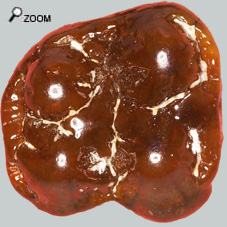
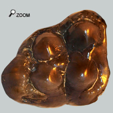
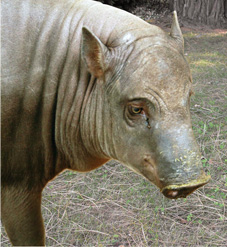

|
Dents larges!...

  Chez Xenohyus, les molaires supérieures sont pratiquement aussi larges que longues. La grande largeur des dents et la faible expression du talonide tend à confirmer que le maxillaire n’était pas très long, ce qui est concordant avec ce que l’on sait de Xenohyus. La dent de gauche est plus grande que la M3 d'hyotherium et surtout avec ses 20 mm de large elle pratiquement aussi large que longue.
La dent de droite, est une forme extrême de M3 sup subcarrée. Et on peut aussi estimer qu’il s’agit de Xenohyus, même si la dent est un peu petite.
Un mystérieux envahisseur...
Ce suidé arrivé par migration reste très discret dans les faluns. Mais plus encore il est très peu retrouvé dans les sites du miocène européen. On ne le rencontre que dans un nombre limité de sites paléontologiques à Laugnac (MN 2), dans les Faluns d’Anjou et de Touraine ainsi que Loranca en Espagne. De manière très sporadique ailleurs… 
D’une manière générale, c’est un suidé avec des incisives assez grosses, un museau assez court. La taille de l'incisive I2 suggère que Xenohyus était un animal fouisseur qui recherchait de la nourriture dans les sols meubles, comme les sangliers actuels.
C’est l’un des plus gros cochons des faluns. Pour autant ce n’était pas un monstre. Comme la taille de Xenohyus a eu tendance à augmenter avec le temps et il est difficile de donner une taille type pour cet animal. Mais il a été estimé que l’animal devait faire 85 kg en moyenne quand Hyotherium n’en faisait que 65.
Le classement de Xenohyus a fait couler beaucoup d’encre. Mais il est maintenant admis que c’est un suidé cousin de Hyotherium. On a dit que Xenohyus avait était remplacé par Hyotherium dans les faunes européennes mais la réalité n’a peut-être pas été aussi simple. Au tout début du miocène, Hyotherium occupait la niche écologique, puis au Mn 2 Xenohyus a pris l’ascendant pour enfin disparaitre en MN 3 à l’avantage d’Hyotherium. Les 2 animaux se sont donc côtoyés et sont probablement entrés en compétition.
|